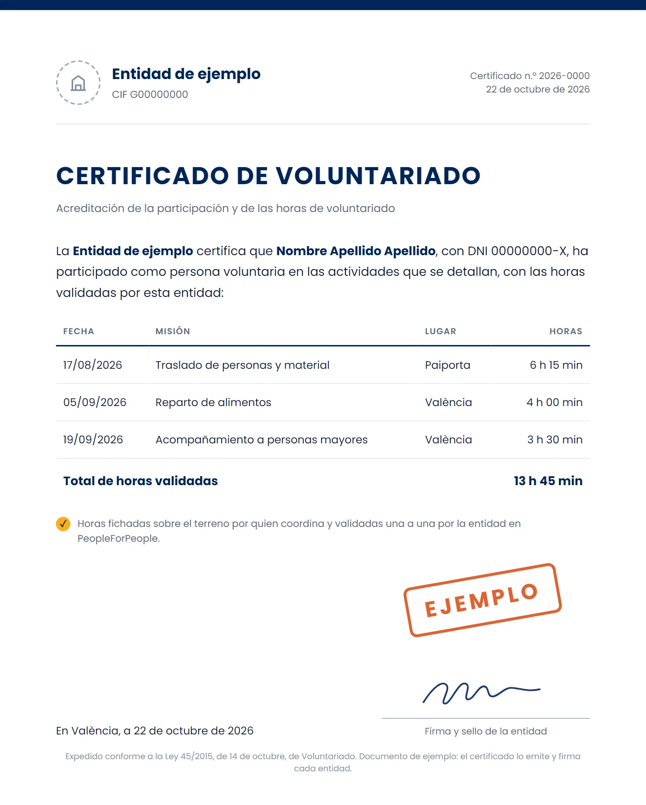

Solo cuentan las validadas
Los totales solo suman horas validadas. Lo pendiente no se esconde: se avisa arriba, con un enlace para revisarlo.
Cada hora se ficha sobre el terreno y la valida la entidad. De ahí salen la memoria de actividad, los datos para tu informe de RSC o ESG y la base del certificado de cada voluntario.

Los totales solo suman horas validadas. Lo pendiente no se esconde: se avisa arriba, con un enlace para revisarlo.
Personas, horas y actividad entre dos fechas, por persona o por misión. Se descarga en CSV o se imprime.
Es la memoria que se adjunta a la justificación de una subvención. A una empresa le da los datos de participación para su memoria de RSC o su informe ESG.
La Ley 45/2015 da a cada voluntario derecho a un certificado con la fecha de incorporación, la duración, las tareas y el lugar (art. 24.1). Lo expide y firma la entidad, sobre las horas validadas.
Las horas llegan de la app con el fichaje de cada persona. Se validan una a una o en tanda; si alguien las ajusta, tiene que decir por qué, y la persona voluntaria lo lee en su historial.
Quien coordina marca la llegada en la app; al cerrar, se calculan las horas.
La entidad las confirma o las ajusta, y si las ajusta dice por qué.
Memoria en CSV o impresa, historial de cada voluntario y certificado de la entidad.
La calculadora estima personas, horas y el valor del tiempo donado, con supuestos que puedes cambiar.